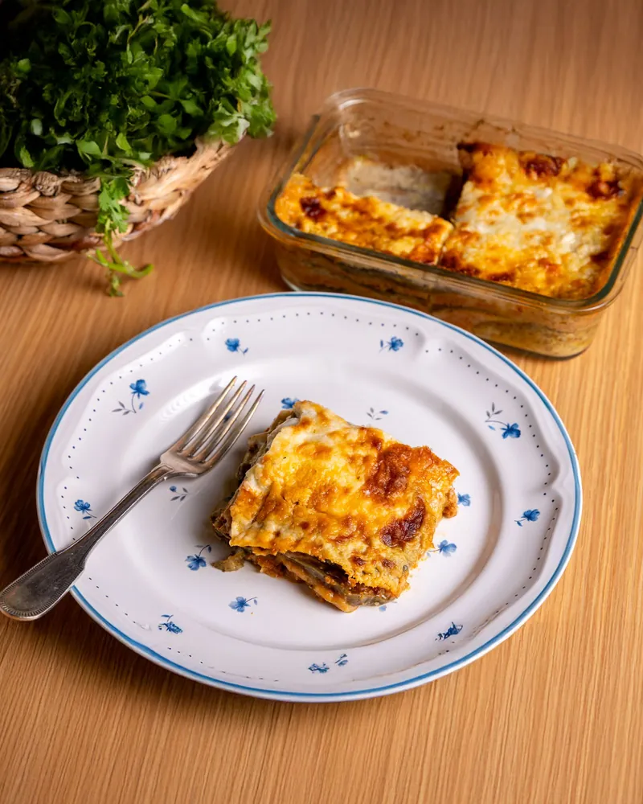
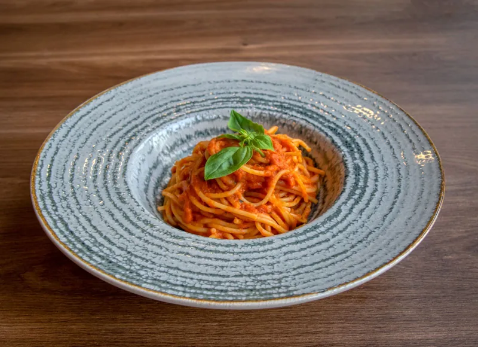

Our story
Three generations, one long table.
Osteria Valdoro is a family kitchen in the old style: a handful of dishes done carefully, bread from the oven every afternoon, and a table that always seems to have room for one more.
The menu changes with the seasons, but the Sunday sauce never does.
Plan your visit
